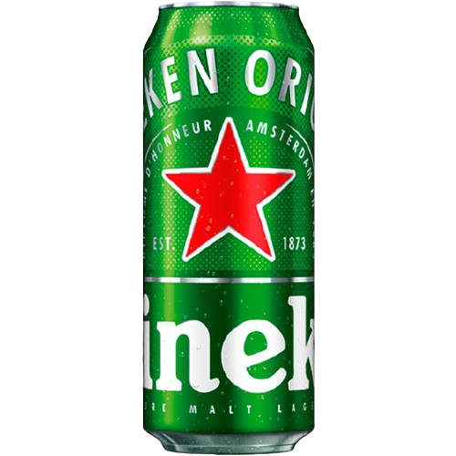

Cerveja Heineken Lata
Se você busca uma cerveja premium, a Cerveja Heineken Lata 350ml é a escolha perfeita. Esta cerveja internacionalmente renomada oferece uma experiência única, com um sabor refrescante que conquistou o paladar de apreciadores em todo o mundo.
A Qualidade Começa no Processo de Fabricação
A Heineken é conhecida por sua dedicação à qualidade desde 1873. No processo de fabricação, apenas os melhores ingredientes são selecionados, incluindo malte de cevada de alta qualidade, lúpulo aromático e água pura. A combinação desses elementos é uma receita de sucesso que resulta em uma cerveja equilibrada e saborosa.
Durante a fermentação, o cuidado meticuloso da Heineken permite que sua cerveja atinja o sabor característico e a consistência perfeita. O resultado é uma bebida dourada, com um aroma fresco e um sabor suave, com notas sutis de lúpulo e um final refrescante.
A Marca que Você Confia
A Heineken é uma marca icônica, conhecida por sua excelência e compromisso com a sustentabilidade. Sua lata de 350ml é perfeita para quem deseja desfrutar de uma cerveja premium em qualquer lugar. Seja em uma reunião com amigos, em um churrasco ou apenas para relaxar após um dia agitado, a Cerveja Heineken Lata 350ml é a escolha ideal.
Graduação Alcoólica 5,0%.
Contém 350ml.
Cerveja Fabricada no Brasil.
Nome |
Cerveja Heineken |
Fornecedor |
Heineken International |
Código |
221 | EAN: 7896045506873 |
Nacionalidade |
Brasil |
Marca |
Heineken |
Família |
Lager |
Estilo |
Premium, Puro Malte |
Embalagem |
Lata |
Litragem |
De 350ml à 499ml |
Com ou Sem Álcool |
Com Álcool |